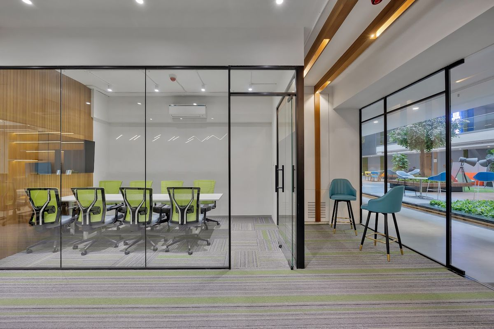

Aria Task
A mesh task chair light enough to forget you are sitting in it.
Seat 480×470mm · Height 430–540mm
EnquirePrice on request
01 / Foundations
Values from src/app/globals.css. Ink mode (bottom bar) shows the ink block, the derived dark: footer, PDP spec block, dark CTA band.
Neutral ramp from canvas to ink, every step a real token. Signal green is two steps and state only, about one percent of a screen.
| Token | Canvas | Ink block | Role |
|---|---|---|---|
| --background | co-bg #FBF8EE | co-panel #231F20 | Page ground |
| --surface1 | co-bg-alt #F3EFE1 | co-panel-border #3B3637 | Panels, hover rows, active tab, sticky bar |
| --surface2 | #E9E4D3 | co-ink-soft #3D3A36 | Reserved; steel text fails AA on it (4.48) |
| --surface3 | co-bg #FBF8EE | co-panel #231F20 | The sheet laid on fog |
| --border | co-border #DCD6C4 | co-panel-border #3B3637 | Structural 1px rules |
| --border-visible | co-ink #231F20 | co-panel-fg #FBF8EE | Closing rules, control frames, field underline |
| --text1 | co-ink #231F20 · 15.34:1 | co-panel-fg #FBF8EE · 15.34:1 | Headings, data, field values |
| --text2 | co-ink-soft #3D3A36 · 10.64:1 | co-panel-muted #B4AEA4 · 7.40:1 | Body, leads |
| --text3 | co-muted #55514A · 7.42:1 | co-panel-muted #B4AEA4 | Secondary copy, inactive nav |
| --text4 | co-muted-2 #6B665D · 5.36:1 | co-panel-faint #9E988D · 5.69:1 | Meta: eyebrows, labels, placeholders |
| --accent | co-ink #231F20 | co-panel-fg #FBF8EE | Primary action fill. Never green |
| --accent-subtle | co-bg-alt #F3EFE1 | #3B3637 | Selected / hover ground |
| --signal / --success | co-green #5EB646 · 2.39:1 | co-green #5EB646 | State only, never text, always paired with ink + ARIA |
| --warning / --error | co-ink #231F20 | co-panel-fg #FBF8EE | No alarm colour: ink plus words |
| --*-bg | = background | = background | Status never tints a surface |
One variable family at two widths plus a narrow mono. Data in mono, claims in caps, reading in Archivo. Sizes below are live at this window width.
| Voice | Setting | Utility |
|---|---|---|
| Claim | Archivo · font-stretch 125% · 600 · uppercase · -0.02em (h3 -0.01em) | co-display, co-h1, co-h2, co-h3, font-display |
| Reading | Archivo · font-stretch 100% · 400 (500 for FAQ questions) | body default, co-lead |
| Data | Martian Mono · font-stretch 87.5% · 400 · 11px · uppercase · +0.02em | co-data (ink), co-eyebrow (steel) |
| Buttons | Martian Mono 12px · 400 · uppercase · +0.02em | Button |
| Field value | Archivo 17px · 400 · ink | Input, Select, Textarea |
Rules are the structure. Corners are square everywhere; the two signal dots are the only round shape on the site.
| Rule | Value | Where |
|---|---|---|
| Hair | 1px #DCD6C4 · border-co-border | Row dividers, spec rows, image frames, header bottom |
| Ink | 1px #231F20 · border-co-ink | Closes SectionHeading, tops card bodies, frames controls, underlines fields |
| Ink 2px | 2px #231F20 | Active nav item, invalid field, FormError rule, focus outline |
| Signal | 2px progress · 3px active bar | ProgressRail, active tab, gallery and hero pagination |
| Radius | 0 · dots 50% | No rounded-* anywhere else |
Flat. Depth is a rule or a surface change; nothing casts a shadow. A floating layer gets an ink edge on a flat veil.
| Level | Value | Use |
|---|---|---|
| Shadow, all levels | none | No shadow-*, drop-shadow-*, blur-*, backdrop-* |
| Overlay veil | bg-co-ink/70 · rgba(35, 31, 32, 0.70) | Quote dialog, flat, no blur |
Tailwind v4 default 4px scale. Halves up to 3.5, then whole steps; odd real values (11, 18, 22) are arbitrary utilities. p-4.5 produces no CSS.
| Token | Value | Use |
|---|---|---|
| co-shell | max 1440 · padding-inline 18 / 24 (640+) / 48 (1024+) | Every route |
| --space-co-section | clamp(64px, 8vw, 120px) | co-section |
| --space-co-section-lg | clamp(80px, 10vw, 160px) | co-section-lg, sparingly |
| Form grid | gap 28px rows · 32px columns | FORM_GRID |
Plotter, not fade. Everything rests finished; with scripts blocked nothing is hidden. Replay to watch each one; reduced motion turns them off.

| Motion | Value | Where |
|---|---|---|
| Hover colour | 150ms cubic-bezier(0.4, 0, 0.2, 1) | Buttons, rows, links |
| Line draw | --duration-plot 400ms · --ease-plot linear | Dimension lines, measure rules, hero grid (30ms per line), nav underline |
| Block wipe | 600ms cubic-bezier(0.65, 0, 0.35, 1) | Reveal, StaggerItem (0.08s CSS / 0.1s prop stagger) |
| Image wipe | 800ms · co-wipe-in 500ms | ClipReveal; click-swapped frames |
| Headline | 600ms --ease-co cubic-bezier(0.16, 1, 0.3, 1) · 40ms per word | KineticHeading, transform only |
| Panels | sticky bar 300ms · drawer 280ms · config pick 450 / 750ms | Transform or clip, never opacity |
Signal uses type, not icons: arrows are text glyphs, open and close are plus and minus. Fallback kit is Lucide, the codebase's own lucide-react, for the rare pictogram.
| Property | Value |
|---|---|
| Observed | Text arrows · + / − · 1px drawing marks · lucide X 16px stroke 1.5 · lucide MessageCircle 24px filled · no phone icon |
| Fallback kit | Lucide · match medium · round caps softer than Signal's butt-ended rules |
| CDN | unpkg.com/lucide-static@1.8.0/font/lucide.css |
| Colour | currentColor · ink on canvas, canvas on ink · never green |
02 / Actions
Square, no shadow, mono labels. Selection is an ink fill plus aria-pressed. Hover is never green.
src/components/ui/segmented-control.tsx
The size selector and the catalog filters; also the answer to toggle, radio and slider. Options come from src/lib/series, never typed. Sizing internals may change (a 44px minimum touch height is coming); the contract below does not.
| Property | Value |
|---|---|
| Contract | square cells sharing 1px ink rules · selected = ink fill + aria-pressed · hover fog · never green |
| Cell (at time of writing) | co-data · min-w 64px · padding 12px 16px · overlap -1px |
| Dark | 1px canvas frame · selected canvas fill, ink text · hover #3B3637 |
| Group | role="group" + aria-label naming the unit |
| Data | config.lens / config.deps / depthOptions() · CHSS-ST-SB160 |
src/components/ui/finish-chip.tsx
A square material sample. The swatch fill is series data and is the one place a gradient is allowed: it describes a material. Selected = ink outline (the state) plus one dot (the confirmation). Label alignment may shift; read the file.
| Property | Value |
|---|---|
| Contract | square swatch · name + code in mono beneath · picker with onSelect, board entry without |
| Swatch | 76px (64px in the rail filter) · 1px hair · fill + 6px edge band from src/lib/series/pros/swatches.ts |
| Selected | 1px ink outline offset 3px · 7px signal dot 6px from top-right · aria-pressed |
| dot={false} | where the progress rail is already lit; outline still carries the state |
| Name · code | co-data 10px · code in steel |
03 / Inputs
No boxes. One ink rule under the value, a mono label above. Errors are ink, never red.
src/components/ui/input.tsx · label.tsx
Archivo 17px on a 1px ink underline. Focus is the global 2px ink outline. Invalid thickens the rule to 2px.
| Property | Value |
|---|---|
| Box | border-0 border-b · 1px border-co-ink · transparent · rounded-none |
| Padding · font | 10px 0 · Archivo 17px · ink |
| Placeholder | co-placeholder #6B665D |
| Invalid | aria-[invalid=true]:border-b-2 |
| Label | co-eyebrow · gap 4px (FIELD = grid gap-1) |
| Grid | FORM_GRID · 2 columns from sm · gap-x 32 · gap-y 28 |
src/components/ui/select.tsx · textarea.tsx
The select is native (the platform's accessible list) with a 1px ink chevron drawn back in. The textarea is the same field, 96px tall, resizing vertically.
| Property | Value |
|---|---|
| Select | native · appearance-none · chevron 11 × 7 · 1px #231F20 · right 2px · pr 28px |
| Textarea | min-h 96px · resize-y · no character count |
| Combobox | absent: native select |
Native date and time inputs in the same underline field, as the showroom visit form uses them. No custom calendar.
| Property | Value |
|---|---|
| Element | Input type="date" / type="time" · fieldClass |
Not on the site. Single choice is a segmented control. If multi-select is ever needed: a 16px square, ink frame, ink fill with a canvas tick. Never round, never green.
| Property | Value |
|---|---|
| Derived from | Principles 2 (green is state) and 3 (square) · segmented control frame |
04 / Data display
Product data reads like a drawing's title block: mono keys in steel, values in ink, on hairlines.
src/components/ui/spec-rows.tsx
A real dl. One or two columns; tone="dark" inside the ink spec block. Values from the series definition.
| Property | Value |
|---|---|
| Grid | minmax(96px, 130px) 1fr · gap-x 16px |
| Row | py 11px · 1px hair bottom · hair top on the list |
| Key · value | co-data steel · co-data ink |
| Dark | rules #3B3637 · keys #9E988D · values #FBF8EE |
| Two columns | md:columns-2 md:gap-x-10 · break-inside-avoid |
Signal's data table: no table chrome, mono rows on rules, quantities right-aligned. Shown on the ink spec block where it lives.
| Property | Value |
|---|---|
| Grid | minmax(0, 1fr) auto 44px · gap-x 12px · py 10px |
| Name | co-data normal-case · canvas |
| Code · qty | on-ink muted · right-aligned qty · ° marks an inferred code |
src/components/ui/index-row.tsx
The list pattern: systems scanned like a parts list. Shown at the md grid. Hover or focus takes fog, a cut-out thumbnail wipes in (lg only) and the arrow becomes the dots.
| Property | Value |
|---|---|
| Grid | lg 90 · minmax(0,360) · 1fr · 260 · 60 / md 64 · 1.1fr · 1fr · 0.8fr · 48 / phone 40 · 1fr · auto |
| Row | min-h 84 (96 md) · py 16 · 1px hair bottom |
| Name | Archivo wdth 125 · 600 · caps · clamp(24px, 2.8vw, 40px) · 0.9 |
| Range | co-data from spanLabel() · never typed |
| Hover | fog · 170px co-cutout thumbnail wipes 300ms linear (lg) · arrow swaps to SignalDots |
src/components/catalog/product-card.tsx
No box: an image well on a hair frame, then a body opened by an ink rule. Catalog data is still the illustrative demo set; the frame and type are real.
A mesh task chair light enough to forget you are sitting in it.
Seat 480×470mm · Height 430–540mm
A mesh task chair light enough to forget you are sitting in it.
Seat 480×470mm · Height 430–540mm
| Property | Value |
|---|---|
| Well | aspect 4:3 · 1px hair · fog · co-highkey · ClipReveal · hover border ink |
| Body | 1px ink rule on top · pt 12 · eyebrow + band · co-h3 · 14px muted tagline · co-data sizes |
| Foot | link "Enquire" + "Price on request" · mt-auto pt 24 |
| Radius · shadow | 0 · none |
05 / Drawing set
Every product render carries a real dimension read from src/lib/series. Drawing marks are 1px spans, not icons.
src/components/ui/dimension-line.tsx
A 1px rule with end ticks and a mono value knocked out of its centre. The label ground must match the surface behind it.
| Property | Value |
|---|---|
| Rule · ticks | 1px currentColor · 1 × 11px ticks at both ends |
| Label | co-data 10px · px 8 · bg = canvas / fog / ink |
| Draw | co-rule · 400ms linear · ticks and label static |
| Value | derive.ts: rangeLabel (spaced U+2014), configLengthLabel, sizeLabel (×), spanLabel (→) |
| ARIA | aria-hidden · the size is also in spec rows or caption |
registration-cross.tsx · figure-caption.tsx · image-placeholder.tsx
A 17px cross pins figure corners the way a drawing set does. Captions number figures down the page.
Fig. 02 Cut-out, with dimension
| Property | Value |
|---|---|
| Cross | 17 × 17 · strokes cross at 8px · currentColor · absolute |
| Caption | co-data steel · figureNumber(n) "Fig. 01" + spaced U+2014 + text |
hairline-grid.tsx · signal-hero.tsx · globals.css co-cutout, co-cutout-plate
The homepage hero composition, on paper in both modes (cut-outs never sit on ink). The render multiplies into a feathered canvas plate in an isolated group, so the green grid passes behind it. Claim scaled to fit this sheet; live size clamp(40px, 5.3vw, 76px).
Office systems Surat, IN
Configurable desking, cabins and meeting tables, specified to the millimetre and quoted to your floor plan.

| Property | Value |
|---|---|
| Grid | 12 columns, 13 × 1px lines inside co-shell · tone="signal" #9DD089 home only · tone="hair" elsewhere · phones every third line |
| Grid draw | co-rule data-axis="y" · 400ms linear · 30ms per line |
| Cut-out | co-cutout: mix-blend-mode multiply + 5% feather mask |
| Over grid lines | isolate group: co-cutout-plate (bg-co-bg, 8% feather) + co-cutout image |
| Never | cut-out inside clip-path / filter / opacity / isolating transform |
| Coordinates | siteConfig.coordinates.label (city centre, pending confirmation) |
src/components/ui/signal-dots.tsx
The two dots above the M in the wordmark. They mean on. Before adding a pair, check nothing else on the screen is lit.
Enquiry received
| Property | Value |
|---|---|
| Fill · radius | bg-co-green #5EB646 · rounded-full |
| Where | header quote button · sent forms · selected finish chip (one dot) · index row hover |
| ARIA | aria-hidden; the state is also in markup (aria-pressed, role="status") |
src/components/ui/progress-rail.tsx
The bar from inside the logo's O, under the thing you chose. The step is always written out, so green is never the only carrier.
Step 2 of 3
Step 1 of 3
| Property | Value |
|---|---|
| Track | 2px · hair (#3B3637 on ink) · square ends |
| Fill | bg-co-green · width = step / total · 400ms linear |
| Caption | co-data steel · mt 8 · "Step n of m" |
07 / Feedback
No toasts, badges, spinners or alarm colours. A form replaces itself in place; an error is ink.
src/components/forms/form-status.tsx · FormSent
Where the two dots mean exactly what the logo says: something switched on. role="status" announces it.
Enquiry received
A specifier will reply within two working days with test-fits and a costed schedule.
| Property | Value |
|---|---|
| Padding | p 24 py 56 (sm p 32 py 80) · compact py 40 |
| Line · title · body | co-data + SignalDots gap 12 · co-h3 mt 24 · 15px muted mt 12 |
FormError · FormFootnote
The palette has no alarm colour. An error is a 2px ink rule and plain words.
Not sent check the phone number and try again.
Visits are by appointment. We reply within two working days.
| Property | Value |
|---|---|
| Error | role="alert" · co-data ink · border-l-2 ink · pl 12 · mt 20 |
| Footnote | co-eyebrow normal-case tracking-normal · mt 16 |
src/components/catalog/catalog-browser.tsx
Left-aligned between hairlines: a mono count line, one sentence, two actions. No illustration.
00 results nothing matches that combination
Widen the filters, or tell us what you are after and we will source it.
| Property | Value |
|---|---|
| Frame | border-y hair · py clamp(48px, 7vw, 96px) · body 15px ink soft max 48ch · actions mt 32 |
src/components/common/image-placeholder.tsx
An honest empty slot until real photography arrives: never filler, never a stock face.
| Property | Value |
|---|---|
| Frame | fog (canvas for cut-outs) · 1px hair · RegistrationCross 12px in · co-eyebrow note |
hue components Signal deliberately does not have, and what to use instead.
| Component | Signal answer |
|---|---|
| Badge, tag, pill | co-eyebrow / co-data text, optionally SignalDots |
| Toast | FormSent replaces the form in place |
| Tooltip, popover | print the label beside the thing · the one floating label is the anatomy hotspot tag, shown on selection, not hover |
| Spinner, skeleton | server-rendered finished content · disabled submit at 0.5 |
| Slider, switch, radio | SegmentedControl with discrete values from src/lib/series |
| Avatar | photo as supplied, or a labelled placeholder frame |
| Coloured alert | FormError: 2px ink rule, ink words |
| Breadcrumb | PageHero eyebrow states the location |
08 / Overlays
An ink edge on a flat 70% ink veil. No blur, no glass, no shadow.
src/components/providers/quote-dialog-provider.tsx · useQuoteDialog().openQuote(subject?)
Canvas sheet, 1px ink frame, ink rule under the head. Same in both modes: the dialog is always paper.
01 / Systems
Two chassis. Every table.
Enquiry get a quote
A floor plan and a headcount are enough to start.
| Property | Value |
|---|---|
| Overlay | fixed inset-0 · bg-co-ink/70 · no blur |
| Sheet | w min(600px, 92vw) · max-h 90vh · 1px border-co-ink · bg-co-bg · radius 0 · no shadow |
| Head | p 24 (sm py 28 px 32) · border-b ink · co-eyebrow · co-h3 max 24ch · 15px muted |
| Close | 40px ink-outlined square · lucide X 16px stroke 1.5 · hover ink fill |
src/components/series/series-sticky-bar.tsx
Fog strip on an ink rule, between the spec block and the pager. Plain primary: no dots.
Single Table · Medium Beam · 1600 × 750 × 720 mm · Nordic Oak top
CHSS-ST-SB160| Property | Value |
|---|---|
| Bar | 68px (SERIES_BAR_HEIGHT) · bg-co-bg-alt · border-t ink |
| Motion | translateY 100% to 0 · 300ms cubic-bezier(0.65, 0, 0.35, 1) |
src/components/common/faq-section.tsx
Native details and summary, so it works without scripts. Plus and minus are text in a 28px ink square.
Desking is configured from the two series; cabins, meeting tables, seating and storage are quoted to your floor plan.
A specifier replies within two working days.
| Property | Value |
|---|---|
| Row | py 20 · border-b hair · hover fog |
| Number | co-data steel · ink when open |
| Question · answer | 16 / 17px 500 ink · 15px / 1.55 ink soft max 65ch |
| Toggle | 28px · 1px ink · + / − · open = ink fill |
09 / Openers
Every route opens with PageHero, every section with SectionHeading, every page ends on CtaBand.
src/components/common/section-heading.tsx
Mono label, caps title, standfirst on one baseline, closed by an ink rule. Labels read "01 / Systems" (on /about, a section sign and a spaced em dash).
01 / Systems
Both desking systems run at 720mm, so tops sit flush wherever two configurations meet. Pick a system, then a configuration, a length and a depth.
All collections →| Property | Value |
|---|---|
| Grid | lg 200px · minmax(0,1fr) · minmax(0,420px) · items-end · gap-x clamp(20px, 2.5vw, 40px) |
| Rule | border-b ink (panel-fg on dark) · pb clamp(20px, 2vw, 28px) · mb clamp(32px, 3.4vw, 48px) |
| Title · blurb | co-h2 max 18ch · 15px ink soft max 46ch + link arrow |
src/components/common/page-hero.tsx
Canvas, the hair grid, a mono label, the claim in extended caps, a lead, and an optional spec-rows aside on columns 9 to 12. Text only, so the claim is the LCP element.
Collections Desking systems
Both run at 720mm, so tops sit flush wherever two configurations meet, and both are built from a short element set rather than one-off parts.
| Property | Value |
|---|---|
| Frame | relative overflow-hidden · border-b ink · HairlineGrid (hair) |
| Copy | co-eyebrow · co-h1 + KineticHeading max 16ch · co-lead max 58ch · gaps clamp(20px, 2.6vw, 36px) |
| Aside | lg:col-span-4 col-start-9 · bg-co-bg plate · usually SpecRows |
| Padding | pt clamp(40px, 5vw, 72px) · pb clamp(48px, 6vw, 96px) |
src/components/common/cta-band.tsx
Every page ends on it. tone="dark" is the ink block. The button is the plain primary: the header already carries the dots.
Enquiry
Get a costed proposal back no cart, no checkout, a real specification from a real person, usually inside two working days.
| Property | Value |
|---|---|
| Light · dark | bg-co-bg border-t ink · bg-co-panel |
| Grid · padding | 1.4fr · 1fr · items-end · py clamp(72px, 9vw, 140px) |
| Type | co-eyebrow · co-h1 max 16ch · clamp(15px, 1.3vw, 18px) ink soft |
| Actions | Button lg primary / onDark (no dots) + optional secondary |
src/components/common/logo.tsx · public/brand/*.svg
The client's vector masters, placed only through Logo. Never retyped, redrawn or recoloured. Minimum 140px wide.
| Tone | File | Ground |
|---|---|---|
| dark | logo-primary.svg | Canvas, fog, light film |
| light | logo-reverse.svg | Ink, dark film, footer |
| mono-dark / mono-light | logo-ink.svg / logo-white.svg | One-colour contexts only |
| Icons | mark-reverse.svg on ink · src/app/icon.svg | Favicon, manifest |